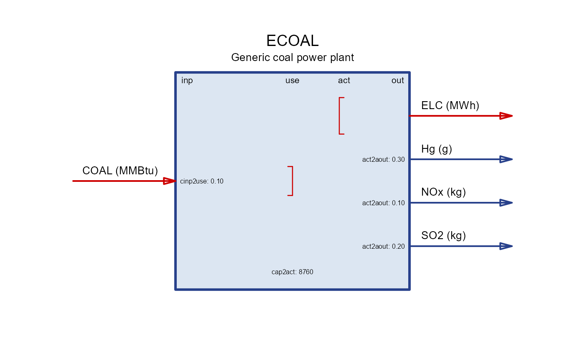

This function initializes and returns an S4 object of class technology,
representing a specific technology with given attributes.
The function has the same arguments as slot-names in the technology class.
Every argument has a specific format as described below and in the class
documentation.
Usage
newTechnology(
name = "",
desc = "",
input = data.frame(),
output = data.frame(),
group = data.frame(),
aux = data.frame(),
units = data.frame(),
cap2act = as.numeric(1),
geff = data.frame(),
ceff = data.frame(),
aeff = data.frame(),
af = data.frame(),
afs = data.frame(),
weather = data.frame(),
capacity = data.frame(),
invcost = data.frame(),
fixom = data.frame(),
varom = data.frame(),
olife = data.frame(),
region = character(),
start = data.frame(),
end = data.frame(),
timeframe = character(),
fullYear = TRUE,
optimizeRetirement = FALSE,
misc = list(),
...
)
# S4 method for class 'technology'
update(object, ...)Arguments
- name
character. Name of the technology, used in sets.
- desc
character. Optional description of the technology for reference.
- input
data.frame. Main commodities input. Main commodities are linked to the process capacity and activity. Their parameters are defined in the
ceffslot.- comm
character. Name of the input commodity.
- unit
character. Unit of the input commodity.
- group
character. Name of input-commodities-group.
- combustion
numeric. combustion factor from 0 to 1 (default 1) to calculate emissions from fuels combustion (commodities intermediate consumption, more broadly)
- output
data.frame. Main commodities output. Main commodities are linked to the process capacity and activity. Their parameters are defined in the
ceffslot.- comm
character. Name of the output commodity.
- unit
character. Unit of the output commodity.
- group
character. Name of output-commodities-group.
- group
data.frame. Details for commodity groups if defined in input and output slots (for reference).
- group
character. Name of the group. Must match the group names in the input and output slots.
- desc
character. Description of the group.
- unit
character. Unit of the group.
- aux
data.frame. Auxilary commodities, both input and output, their parameters are defined in the
aeffslot.- acomm
character. Name of the auxilary commodity.
- unit
character. Unit of the auxilary commodity.
- units
data.frame. Key units of the process activity and capacity (for reference).
- capacity
character. Unit of capacity
- use
character. Unit of 'use' (grouped input) if applicable.
- activity
character. Unit of activity variable of the technology.
- costs
character. Currency of costs variable of the technology.
- cap2act
numeric. Capacity to activity ratio. Default is 1. Specifies how much product (activity, or output commodity if identical) will be produced per unit of capacity.
- geff
data.frame. Input-commodity-group efficiency parameters.
- region
character. Name of region to apply the parameter, NA for every region.
- year
integer. Year to apply the parameter, NA for every year.
- slice
character. Name of slice to apply the parameter, NA for every slice.
- group
character. Name of group to apply the parameter. Required, must match the group names in the input and output slots.
- ginp2use
numeric. Group-input-to-use coefficient, default is 1.
- ceff
data.frame. Main commodity and activity efficiency parameters.
- region
character. Region name to apply the parameter, NA for every region.
- year
integer. Year to apply the parameter, NA for every year.
- slice
character. Name of slice to apply the parameter, NA for every slice.
- comm
character. Name of commodity to apply the parameter, different parameters require specification either input or output commodity.
- cinp2use
numeric. Commodity-input-to-use coefficient, default is 1.
- use2cact
numeric. Use-to-commodity-activity coefficient, default is 1.
- cact2cout
numeric. Commodity-activity-to-commodity-output coefficient, default is 1.
- cinp2ginp
numeric. Commodity-input-to-group-input coefficient, default is 1.
- share.lo
numeric. Lower bound on a share of commodity within a group, default is 0.
- share.up
numeric. Upper bound on a share of commodity within a group, default is 1.
- share.fx
numeric. Fixed share of commodity within a group, ignored if NA. This parameter overrides
share.loandshare.up.- afc.lo
numeric. Lower bound on the physical value of the commodity, ignored if NA.
- afc.up
numeric. Upper bound on the physical value of the commodity, ignored if NA.
- afc.fx
numeric. Fixed physical value of the commodity, ignored if NA. This parameter overrides
afc.loandafc.up.
- aeff
data.frame. Parameters linking main commodities, activities, and capacities to auxiliary commodities.
- region
character. Region name to apply the parameter, NA for every region.
- year
integer. Year to apply the parameter, NA for every year.
- slice
character. Name of slice to apply the parameter, NA for every slice.
- acomm
character. Name of auxilary commodity to apply the parameter.
- cinp2ainp
numeric. Main-commodity-input-to-auxilary-commodity-input coefficient, ignored if NA.
- cinp2aout
numeric. Main-commodity-input-to-auxilary-commodity-output coefficient, ignored if NA.
- cout2ainp
numeric. Main-commodity-output-to-auxilary-commodity-input coefficient, ignored if NA.
- cout2aout
numeric. Main-commodity-output-to-auxilary-commodity-output coefficient, ignored if NA.
- act2ainp
numeric. Technology-activity-to-auxilary-commodity-input coefficient, ignored if NA.
- act2aout
numeric. Technology-activity-to-auxilary-commodity-output coefficient, ignored if NA.
- cap2ainp
numeric. Technology-capacity-to-auxilary-commodity-input coefficient, ignored if NA.
- cap2aout
numeric. Technology-capacity-to-auxilary-commodity-output coefficient, ignored if NA.
- ncap2ainp
numeric. Technology-new-capacity-to-auxilary-commodity-input-coefficient, ignored if NA.
- ncap2aout
numeric. Technology-new-capacity-to-auxilary-commodity-output coefficient, ignored if NA.
- af
data.frame. Timeslice-level availability factor parameters.
- region
character. Region name to apply the parameter, NA for every region.
- year
integer. Year to apply the parameter, NA for every year.
- slice
character. Name of slice to apply the parameter, NA for every slice.
- af.lo
numeric. Lower bound on the availability factor, default is 0.
- af.up
numeric. Upper bound on the availability factor, default is 1.
- af.fx
numeric. Fixed availability factor, ignored if NA. This parameter overrides
af.loandaf.up.- rampup
numeric. Ramping-up time constraint RHS value, ignored if NA. Depends on the technology timeframe.
- rampdown
numeric. Ramping-down time constraint RHS value, ignored if NA. Depends on the technology timeframe.
- afs
data.frame. Timeframe-level availability factor constraints.
- region
character. Region name to apply the parameter, NA for every region.
- year
integer. Year to apply the parameter, NA for every year.
- slice
character. Name of slice to apply the parameter, required.
- afs.lo
numeric. Lower bound on the availability factor for the timeframe, default is 0.
- afs.up
numeric. Upper bound on the availability factor for the timeframe, default is 1.
- afs.fx
numeric. Fixed availability factor for the timeframe, ignored if NA. This parameter overrides
afs.loandafs.up.
- weather
data.frame. Parameters linking
weather factors(external shocks specified byweatherclass) to the availability parametersaf,afs, andafc.- weather
character. Name of the applied weather factor, required, must match the weather factor names in a
weatherclass in the model.- comm
character. Name of the commodity with specified
afc.*to be affected by the weather factor, required ifafc.*parameters are specified.- wafc.lo
numeric. Multiplying coefficient to the lower bound on the commodity availability parameter
afc.lo, ignored if NA.- wafc.up
numeric. Multiplying coefficient to the upper bound on the commodity availability parameter
afc.up, ignored if NA.- wafc.fx
numeric. Multiplying coefficient to the fixed value of the commodity availability parameter
afc.fx, ignored if NA. This parameter overrideswafc.loandwafc.up.- waf.lo
numeric. Multiplying coefficient to the lower bound on the availability factor parameter
af.lo, ignored if NA.- waf.up
numeric. Multiplying coefficient to the upper bound on the availability factor parameter
af.up, ignored if NA.- waf.fx
numeric. Multiplying coefficient to the fixed value on the availability factor parameter
af.fx, ignored if NA. This parameter overrideswaf.loandwaf.up.- wafs.up
numeric. Multiplying coefficient to the upper bound on the availability factor parameter
afs.up, ignored if NA.- wafs.lo
numeric. Multiplying coefficient to the lower bound on the availability factor parameter
afs.lo, ignored if NA.- wafs.fx
numeric. Multiplying coefficient to the fixed value on the availability factor parameter
afs.fx, ignored if NA. This parameter overrideswafs.loandwafs.up.
- capacity
data.frame. Capacity of the installed technology (in units of capacity).
- region
character. Region name to apply the parameter, NA for every region.
- year
integer. Year to apply the parameter, required, values between specified years will be interpolated.
- stock
numeric. Predefined capacity of the technology in units of capacity, default is 0. This parameter also defines the exogenous capacity retirement (age-based), or exogenous capacity additions, not optimized by the model, and not included in investment costs.
- cap.lo
numeric. Lower bound on the total capacity (preexisting stock and new installations), ignored if NA.
- cap.up
numeric. Upper bound on the total capacity (preexisting stock and new installations), ignored if NA.
- cap.fx
numeric. Fixed total capacity (preexisting stock and new installations), ignored if NA. This parameter overrides
cap.loandcap.up.- ncap.lo
numeric. Lower bound on the new capacity (new installations), ignored if NA.
- ncap.up
numeric. Upper bound on the new capacity (new installations), ignored if NA.
- ncap.fx
numeric. Fixed new capacity (new installations), ignored if NA. This parameter overrides
ncap.loandncap.up.- ret.lo
numeric. Lower bound on the capacity retirement (age-based), ignored if NA.
- ret.up
numeric. Upper bound on the capacity retirement (age-based), ignored if NA.
- ret.fx
numeric. Fixed capacity retirement (age-based), ignored if NA. This parameter overrides
ret.loandret.up.
- invcost
data.frame. Total overnight investment costs of the project (per unit of capacity).
- region
character. Region name to apply the parameter, NA for every region.
- year
integer. Year to apply the parameter, NA for every year.
- invcost
numeric. Total overnight investment costs of the project (per unit of capacity), default is 0.
- wacc
numeric. Weighted average cost of capital, (currently ignored).
- fixom
data.frame. Fixed operational and maintenance cost (per unit of capacity a year).
- region
character. Region name to apply the parameter, NA for every region.
- year
integer. Year to apply the parameter, NA for every year.
- fixom
numeric. Fixed operational and maintenance cost, default is 0.
- varom
data.frame. Variable operational and maintenance cost (per unit of activity or commodity).
- region
character. Region name to apply the parameter, NA for every region.
- year
integer. Year to apply the parameter, NA for every year.
- slice
character. Name of the time-slice or (grand-)parent timeframe to apply the parameter, NA for every time-slice of the technology timeframe.
- varom
numeric. Variable operational and maintenance cost per unit of activity, default is 0.
- comm
character. Name of the commodity for which the parameter will be applied, required for
cvaromparameter.- cvarom
numeric. Variable operational and maintenance cost per unit of commodity, default is 0.
- acomm
character. Name of the auxilary commodity for which the
avaromwill be applied, required foravaromparameter.- avarom
numeric. Variable operational and maintenance cost per unit of auxilary commodity, default is 0.
- olife
data.frame. Operational life of the installed technology (in years).
- region
character. Region name to apply the parameter, NA for every region.
- olife
integer. Operational life of the technology if installed during optimization, in years, default is 1.
- region
character. Vector of regions where the technology exists or can be installed. Optional. If not specified, the technology is applied to all regions. If specified, must include all regions used in other slots.
- start
data.frame. The first year the technology can be installed.
- region
character. Region name to apply the parameter, NA for every region.
- start
integer. The first year the technology can be installed, NA means all years of the modeled horizon.
- end
data.frame. The last year the technology can be installed.
- region
character. Region name to apply the parameter, NA for every region.
- end
integer. The last year the technology can be installed, default is Inf.
- timeframe
character. Name of timeframe level the technology is operating. By default, the lowest level of timeframe of commodities used in the technology is applied.
- fullYear
logical. Incidates if the technology is operating on a full-year basis. Used in storages. currently ignored for technologies.
- optimizeRetirement
logical. Incidates if the retirement of the technology should be optimized. Also requires the same parameter in the
modelorscenarioclass to be set to TRUE to be effective.- misc
list. List of additional parameters that are not used in the model but can be used for reference or user-defined functions. For example, links to the source of the technology data, or other metadata.
- ...
slot-names with data to update (see
newTechnology)- object
object of class technology
Examples
ECOAL <- newTechnology(
name = "ECOAL", # name, used in sets, no white spaces or special characters
desc = "Generic coal power plant", # any description of the technology
input = data.frame(
comm = "COAL", # name of input commodity
unit = "MMBtu", # unit of the input commodity
# combustion factor from 0 to 1 (default 1) to calculate emissions
# from fuels combustion (commodities intermediate consumption, more broadly)
combustion = 1
),
output = data.frame(
comm = "ELC", # name of output commodity
unit = "MWh" # unit of the output commodity
),
aux = data.frame(
acomm = c("NOx", "SO2", "Hg"), # names of auxilary commodities
unit = c("kg", "kg", "g") # units
),
# Capacity to activity ration: 8760 MWh output a year per MW of capacity
cap2act = 8760,
ceff = data.frame( # efficiency parameters for the main commodities
comm = "COAL",
# efficiency, 1/10 MWh per MMBtu, inverse heat rate
# check: 1 / convert(10, "MMBtu", "MWh") ~= 34% efficiency
cinp2use = 1 / 10
),
aeff = data.frame( # paramaters for the auxilary commodities
acomm = c("NOx", "SO2", "Hg"),
act2aout = c(0.1, 0.2, 0.3) # emission factors, linked to activity
),
af = data.frame( # availability (capacity) factor by time slices
af.up = 0.95 # maximum 95% per hour
),
afs = data.frame( # availability factor by timeframes
slice = "ANNUAL", # annual availability factor
afs.lo = 0.40, # at least 40% per year
afs.up = 0.85 # maximum 85% per year
),
fixom = data.frame( # fixed operational and maintenance cost
region = c("R1", "R2", NA), # regions, NA - all other regions
fixom = c(100, 200, 150) # MW a year
),
varom = data.frame( # variable operational and maintenance cost
region = c("R1", "R2"), # regions
varom = c(1, 2) # $1 and $2 per MWh
),
invcost = data.frame( # investment cost
year = c(2020, 2030, 2040), # to differentiate by years
invcost = c(1000, 900, 800) # $1000, $900, $800 per MW
),
start = data.frame( # start year
start = 2020 # can be installed from 2020
),
end = data.frame( # end year
end = 2040 # can be installed until 2040
),
olife = data.frame( # operational life
olife = 30 # years
),
capacity = data.frame( # existing capacity
year = c(2020, 2030, 2040), # to differentiate by years
region = c("R1"), # exists only in R1
stock = c(300, 200, 100) # age-based exogenous retirement
),
# regions where the technology can be installed
region = c("R1", "R2", "R5", "R7"),
)
draw(ECOAL)
